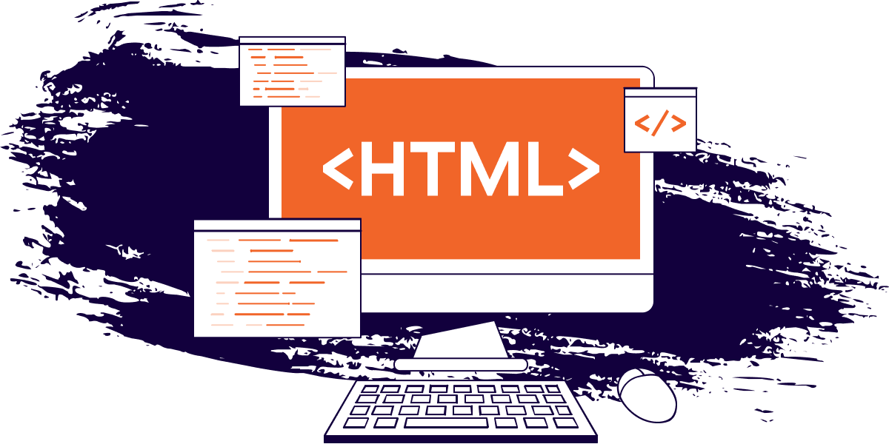

Getting Started with Web Development
Learn how websites are created using HTML, CSS, and JavaScript. This article introduces the basic technologies used by web developers.
Read More

Welcome to MyBlog, a simple website where we share interesting articles, helpful information, and useful learning resources.
Our goal is to help readers discover new ideas, improve their knowledge, and explore different topics such as technology, education, travel, and lifestyle.
Whether you are a student, a working professional, or someone who enjoys reading, there is always something new to learn here. We believe that learning should be enjoyable, accessible, and available to everyone.
Learn how websites are created using HTML, CSS, and JavaScript. This article introduces the basic technologies used by web developers.
Read More

Technology continues to change the way we work, study, and communicate. Discover why digital skills are becoming more important.
Read More

Programming can be challenging for beginners. Learn simple strategies to develop your skills and become more confident in writing code.
Read More
Programming can be challenging for beginners. Learn simple strategies to develop your skills and become more confident in writing code.
Read More
View All Announcements
MyBlog is a simple online platform designed to share useful articles and information. We believe that learning should be accessible to everyone.
Learn More About Us